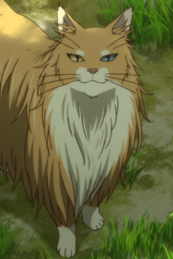
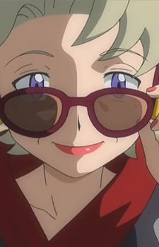
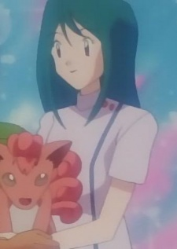
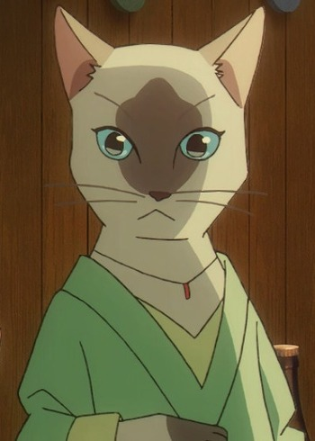

|
Daisy |
- Pokemon
- Pokemon Advanced Generations
- Pokemon Chronicles
|
Daisy is the oldest of Misty's sisters. She gets along with Misty. Daisy is cheerful but can somewhat absent-minded. shen it comes to being a gym leader. She spends more time at the gym than Violet and Lily. |
|  |
Molly |
|
Molly is a Cat that resides within the village of Ulthar. She currently holds the position as the last King of Cats. |
|  |
Palermo |
|
Palermo is a famous producer and a former Kalos Queen. Due to her reputation as a producer, she recieves a lot of unwanted attention from the press. She is seeking young Performers and help them achieve a successful career in the Showcase World. She wants some with potential to be a kindhearted Kalos Queen. |
|  |
Suzy |
|
Suzy is a famous Pokemon Breeder and Groomer. Her style is to release Pokemon's inner beauty and health. |
|  |
Tamaki |
|
Tamaki is a former human who want to turn to a cat to escape the human world. |
 |
The Dark |
|
The Dark is one of the fifty two clow cards. It has the power of the Moon. She is serene and gentle. |
 |
The Light |
|
The Light is one of the fifty two clow cards. It has the power of light. Light is very supportive of Sakura as the candidate for the cards' master. She is the sister of The Dark. |